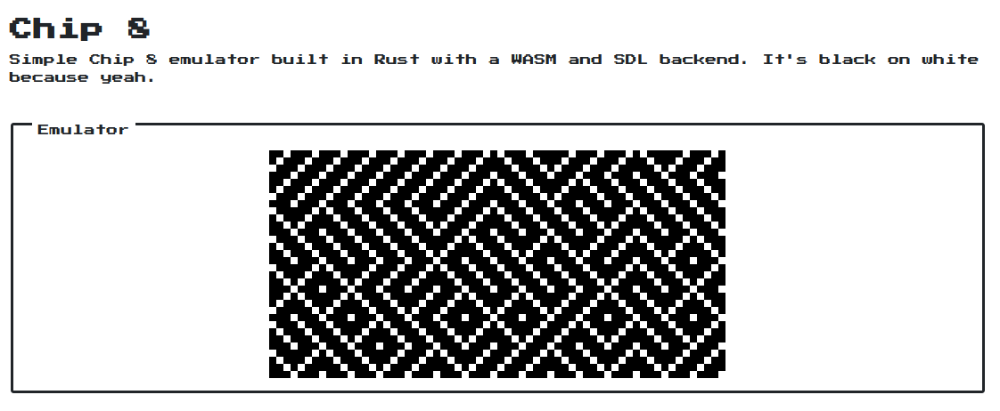
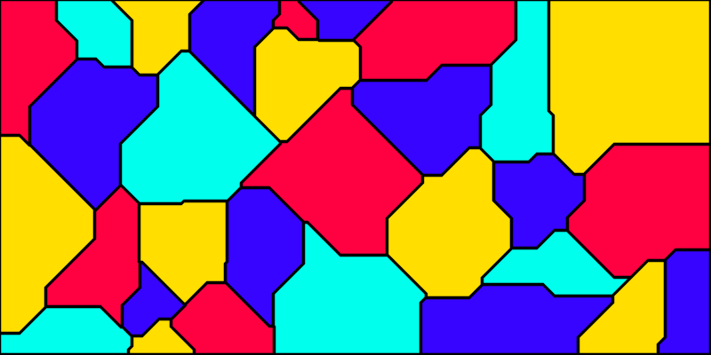

The year is coming to an end and I guess it's time to take a look at what one has accomplished in the past 365 days.
I had two main goals this year: do more side projects and blog more. My plan was to do at least a project per month and as soon as it's in a “reasonably” complete state write a post about it.
So let's see what projects I made during this year.
Chip8 emulator
This was the first project of the year and I think it was one of funniest. It's a simple chip8 emulator capable of running simple games like PONG.
It was a ton of fun because I learned a bit more about how emulators work and I got to play with WebAssembly and Rust. Under a non technology point of view, this project was interesting because I realized that even if I had the core of the project done in a couple of days, I spent a lot more time polishing things like making the web ui nicer. A project is not only the core algorithm I guess.
Anyway, you can find the emulator at https://d-dorazio.github.io/chip8 and a blog post here.

Sudoku solver
I like Sudoku, it's a fun game that I usually play when I'm bored at the airport, but still. I decided to write a solver (and generator) for it.
I thought it was a hard problem given the quite big search space, but it turns out that you can prune the search space aggressively by just following the rules. It didn't took me very long to come up with a reasonably fast solver and then a generator. I also implemented a couple (probably unneeded) optimizations because bit twiddling is always a fun thing to do.

JV
I don't know if this was a fun project, but sure enough it was frustrating. It's a “simple” json viewer that allows to use jq-like queries to search for elements in a JSON document. It also supports automatic jumping to the path under the cursor if it's a valid query. Incidentally this also works as a simple file viewer.
The part that was annoying was text rendering, in particular handling the width of a character. I thought that as long as we stick with ASCII (I'm sorry, but handling the width of unicode codepoints is really a pain) it should always be one. Then the tab ‘\t’ character came along and I started crying…
Anyway, I'm proud to say that tab characters are properly handled by JV and that it proved useful a bunch of times.
If you really want to know more about my frustrutations then I wrote a post for you.

Buzz
This was the hardest, but most satisfying project among all the other projects I've done this year. It's a toy ray tracer that I wrote to learn more about the topic and about rendering in general.
It was a blast, I learned a bunch of things and I realized the effort it goes into making a scene look good. Even more so if it's just a frame of an animation!
This was my entry point to the world of computer graphics which is something I realized I like playing with from time to time.
Since this was a big project I definitely wanted to write a post and there you have it!

Diffusion limited aggregation
As soon as Buzz got into a “working” state I wanted to use it to render some cool looking scenes and diffusion limited aggregation seemed like a cool thing to try.
DLA is a process that simulates Brownian motion which results in dendric and snowflaky shapes. I think it can be done in any number of dimensions but at least in 2D and 3D the resulting patterns are quite interesting.
I intended to write a blog post about this because I particularly enjoyed working on this project, but for whatever reason I did not. Maybe in the future.

Isolines - marching squares
At this point, I needed a break from Buzz because it's best not to overdo and I decided to play around with isolines. I've always been fascinated by topographic maps. I'm not sure why, I guess I like lines.
Anyway, I decided to implement the marching square algorithm that allows to find the paths in an image at a given “height” (technically speaking above a given threshold, but meh…). If we simply use it to find the paths at different heights then we have a simple topographic map!
I like the topographic maps I'm able to generate starting from an heightmap and I'm thinking about printing (or even pen plotting) some just for fun.
I think this was worth a blog post, but I was lazy and didn't write any.

Terrain mesh generation
On the same note as the previous project, I started wondering if I could generate a 3D mesh resembling a mountain or terrain. It turned out to be quite easy once I found out about Perlin noise. I spent more time writing the code that actually connects the mesh than tuning the terrain generation parameters.
The best thing about this project is that eventually I was able to 3d print some of the generated meshes!
I wrote a post about this, yay!

Delaunay mesh
This was more of an experiment than an actual project since I was mostly playing around with triangulation with no clear goal in mind. You won't find anything too interesting here, it's just an (inefficient) implementation of a triangulation algorithm.

Morse CLI
This was a funny one, not particularly challenging but it was nice nonetheless. It's a very simple CLI that allows to encode and decode ASCII text in Morse code. I also implemented a very simple play feature that allows to actually hear what Morse sounds like.

Four-Color maps
This was the last project of the year, it's an absolutely non mathematical proof that the Four-Color theorem holds. The theorem says that any given planar map can be colored using at most four colors and what's the best way to test it than actually generating some maps and trying to color them? That's exactly what I did.
Ironically, the hardest part of the project was not finding whether a map (or graph) could be colored with at most four colors, but instead generating a good looking random map. I implemented a voronoi like map generation which works reasonably well, but I think there are better ways.
Also, this made me realize that I like maps more than I thought.

Conclusions
If I'm ok with the amount and kind of projects I managed to do, I'm definitely not with the amount of posts I've written as I've written only five. There are some projects that I think are worth a post either because they're interesting or because I put a lot of effort in them, but I was too lazy or tired to actually write it.
My resolutions for 2020 are basically the same that is a project per month and blog post about it except that this time I want to be more strict on the latter.
Happy new year!